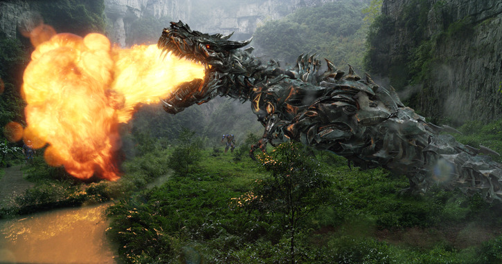
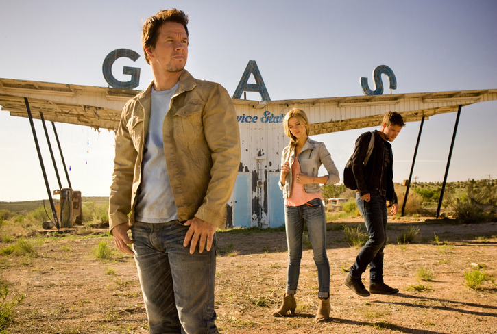
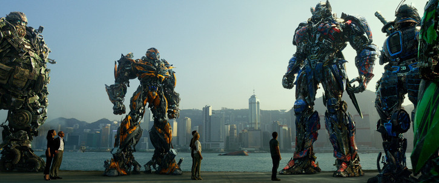

Date Released
: June 27th, 2014
MPAA Rating
: PG-13
Starring
: Mark Wahlberg, Nicola
Peltz, Jack Reynor, TJ Miller, Stanley Tucci, Kelsey Grammer, Peter Cullen
(voicing Optimus Prime), Frank Welker (voicing Galvatron), Mark Ryan (voicing
Lockdown), John Goodman (voicing Hound), John DiMaggio (voicing Crosshairs),
Ken Watanabe (voicing Drift)

Having solidly entrenched
itself as a blockbuster movie series, Transformers has now officially gone
beyond the "trilogy" expected of most sci-fi movies and is now firmly entrenched
for the foreseeable future as a viable "ongoing" series of flicks. That's
not to say that
Age of Extinction
simply sticks to what
Dark
of the Moon
did and ups the ante again, like the last two movies;
rather, this movie changes some things, some for the better, and some for
the worse (but mostly for the better).
First, let's start off
with a basic summarization of the plot. Of course, since this is a movie
review, there will be moderate spoilers ahead, but nothing that should
ruin any of the major plot twists of the movie, should you be worried about
that. After the Battle of Chicago in Dark of the Moon, the U.S. has cut
all ties with ALL Transformers, Autobot and Decepticon (it may not make
sense at the beginning why they're after the Autobots after we were helped
by them for so long, but you get an adquate explanation as to why by the
end of the first act), and at the lead is an organization called "Cemetary
Dawn", headed by Harold Attinger (Kelsey Grammer). This organization is
hunting them-- along with a mysterious new Transformer adversary named
Lockdown. The plot focus shifts about halfway through the movie from the
U.S. to China, and a mysterious artifact simply referred to as "The Seed".
Megatron has been reborn as Galvatron via a method I won't get into too
much here, and now has his own plot to throw into the mix in addition to
Lockdown's true reasons for helping the humans.
Let's get the negatives
out of the way now-- firstly, it's hard for me to accurately score the
plot of this movie in my final rating. Much moreso than any of the previous
three movies, this is not an almost entirely stand-alone tale. The movie
doesn't end in a huge cliffhanger or anything like that-- there's a definite
resolution at the end-- but there's some stuff involving "The Creators"
that is clearly left open for the sequel, and the Dinobot's origins are
barely touched upon. Apparently the Dinobots were originally going to be
used for the fifth movie, but because of various reasons were put into
this one. It shows that they were, relatively speaking, "tacked on", though--
they only show up in about the last half-hour of the movie, and none of
them do anything except growl and roar. Don't expect any "Me Grimlock"
lines here, folks (in fact, they aren't even named in the movie at all).
There are a few hiccups here and there, though-- for one, the idea of a
company designing car Transformers
for civilians
is just inexcusably
dumb, no way around that. The explanation behind Megatron's "chromosones"
still being alive in his head was pretty weird and weak, too. Overall,
I was wondering whether to give the plot a (relatively) low score because
it's not entirely self-contained and some major gaps are still left, but
those gaps could easily (and probably) will be picked up to some extent
in the next movie, so I eventually decided to stick with a fairly high
score for the plot. If the next movie doesn't expand upon the plot threads
that need expanding upon with this movie, than TF5's plot score will suffer
when the time comes, not this movie's.
The movie also just
plain goes on too long. It's still a pretty engaging ride, but 2 hours
and 45 minutes (2 1/2 hours if you don't include the credits) is a pretty
lengthy ride. 15-20 minutes of the movie could be cut easily without ruining
any major plot points-- more specifically, early in Hong Kong when it's
just the human characters fighting, it just goes on for a bit too long.
There's also an action scene very close to the end involving Lockdown using
his ship's tractor beam on Hong Kong, but although visually stimulating,
it admittedly doesn't do anything for the plot, and it's far enough into
the movie where I could see your average movie-goer getting a bit antsy
for the ending to arrive. Even with this length, it's obvious a few scenes
got cut, as a few minor threads are never picked up upon. There's a scene
where Jack Reynor's character Shane is caught at KSI (a robotics company
headed by Stanley Tucci's character who is in the process of making their
own controllable Transformers). Bumblebee wasn't too happy with Stinger,
a "better" copy of him, being used by KSI, and so knocked the prototype
over-- the loud sound, of course, attracting undue attention. The manager
comes by after BB's transformed back into vehicle mode and tells Shane
angrily to come to his office, but that's never followed up upon. There's
also a really cool scene near the end where the Dinobots and a few of the
"normal" Autobots transform and stand by to guard the only entryway into
the final battle, but they're never shown actually engaging anybody afterwards.
The odd cuts aren't all that common, though, and probably won't even be
noticed by most until after repeated viewings. Some have complained about
all the products advertised, but for the most part they're in the background
and don't bother me int the least. Two bits are the exception-- one involving
a Bud Light truck crashing and Cade Yeager taking a swig of one of the
bursting-open bottles feels a bit too forced. There's also one awesome
slow-motion action scene that very obnoxiously puts the back of a bus advertising
Victoria's Secret RIGHT IN THE MIDDLE of the screen, actually BLOCKING
some robot-on-robot action for a few seconds-- that one got on my nerves,
though again, it's there for like five seconds.

There's a lot of things
this movie improves upon, though. Usually in the past movies, Optimus Prime,
Bumblebee, and to a lesser extent Megatron and one other movie-specific
character would get a fair number of lines, and the rest of the TFs would
have just a couple of lines at best and otherwise just be in the background
during fight scenes for support. Not so with this movie-- although the
Dinobots don't get much (if any) characterization, the other "new" guys--
Hound, Drift, Crosshairs, Galvatron, and Lockdown-- definitely have a pretty
good amount of screen time and each has some pretty cool moments, becoming
much more than background hero/villain fodder. Hound in particular, voiced
by John Goodman, is a fantastic character with a lot of great, quotable
lines. Using every weapon at his disposal and smoking a "cigar", he's a
one-man wrecking crew and he knows it. Crosshairs' behavior is surprisingly
Decepticon-ish for an Autobot, but he still fights the good fight in the
end, and loves what he's doing. Drift gets a bit less characterization
than the others-- "honorable samurai" essentially explains his character
to a tee-- but he's still fun and gets in some good screen presence. (This
movie definitely has the most quotable lines out of any in the series so
far.) Seeing all of the Autobots-- particularly Optimus-- so desperate
at the beginning of the movie, being hunted as they are, that they're at
each other's throats. This is a bit off-putting at first, but they eventually
learn to work together and it's neat to see a bit of development there.
Galvatron is (finally!) voiced by the one and only Frank Welker, who puts
any fears that he's too old to do the role anymore to rest, using his slightly
deeper, more threatening Megatron voice from the "Prime" series-- although
he has relatively little development compared to the other new guys, the
acting is great, and there's some great setup for the next movie from him.
Lockdown is probably my favorite new character in the movie, and is just
plain awesome in just about every scene he's in. He has a purpose, and
his focus on it is pretty intense. He's also quite dismissive of nearly
everyone else, and rightfully so, given how good he is at his job. Definitely
the best villain in the movie series, and there's certainly enough nods
to his Animated self where it doesn't just feel like a name re-use like,
say, Sideswipe from the previous two movies. The final fight scene between
him and the others is also VERY well-done and brings together many of the
plot threads and themes throughout the movie in a satisfying, approrpriately
reciprocal manner. The focus is also shifted off of Bumblebee a bit for
this movie compared to the previous three, which is a good choice-- he's
still simply using radio clips for talking, and there's only so much you
can do with that.
All of this is not to
say that the main human characters aren't at least decently developed,
either. Mark Wahlberg's character Cade Yeager makes for a much more compelling
lead than Shia LaBeouf, with the main human "B-plot" focusing on him not
letting his daughter Tessa (Nicola Peltz) go off on the life she wants
to lead with her recently-discovered boyfriend, despite the fact that she's
proven to be "mostly" responsible as a 17-year old. Despite being the signature
"eye candy" of the movie, Nicola Peltz's acting is pretty good at times--
not exactly Oscar-worthy, but convincing. Stanley Tucci's character Joshua
also makes for a nice "blurred lines" character, at times taking part in
bad (but, in a way, understandable) things, but coming around at the end
as you'd expect. Kelsey Grammer's character Harold Attinger gives off the
best performance, making for a very compelling human villain-- an ex-CIA
agent who just wants some recognition and for his country to be safe, but
he goes too far. There are a few mis-steps, though. For one, I found Jack
Reynor to be a medicore actor at best, and he gets VERY in-your-face and
inappropriate (in terms of his tone and what he's saying, not in terms
of being crude) to Tessa's dad Cade. This would be fine if he gets knocked
down a rung at the end, but apparently them fighting together makes everything
okay-- the turnabout face of Cade's reaction to Tessa's "surprise" boyfriend
at the end of the movie isn't quite justified, methinks. Another minor
character, played by Chinese actress Li BingBing, seems a bit superfluous
to the plot and her acting is also pretty medicore compared to the other
B-list human characters.
One other thing that
I feel this movie improves upon is the raunchy and/or awkward bits of humor
that were a bit too prevalent in the previous movies-- there is pretty
much no innuendo at all here, and the humor practically always is actually
funny and not awkward at all, though the curses still fly too often for
my liking. The VERY few bits that don't fit these descriptors are brief
and over within a few seconds. (To give an example, there's these weird
googly-eyed drones aboard Lockdown's ship that I suppose are supposed to
be funny, but they look incredibly out-of-place in a live action movie,
like robotic muppets. Thankfully they're only in about thirty seconds of
the film total.) There's still plenty of very violent robot-on-robot action,
though, so this still isn't a movie I'd recommend taking kids to.
As always, the CGI effects
are incredible, particularly a surprsingly long (but awesome) segment aboard
Lockdown's ship. The Transformers and their transformations look fantastic,
the only exception being that when many of the KSI "Transformers" transform,
they dissolve into little cubes (due to how they were created), fly through
the air, and reform into their other mode, which honestly looks kinda of
fake, even if those transformations are brief. The action sequences are
incredibly well-done and leave you practically breathless, so Transformers
continues to deliver thrills in spades in that respect-- not much new to
say here, but this is one wild ride, folks. Steve Jablonsky's musical score
is also incredible, and Imagine Dragons' song "Battle Cry" really gets
you pumped at certain points, so no complaints whatsoever there.

Age of Extinction sets a promising future trend for the already great Transformers movie franchise, with considerably better characterization (especially for the Transformers) and humor that is funny and not at all wince-inducing. The action sequences, sounds, and CGI graphics are absolutely insane and incredible as they've always been for this series, and I like that they're now opening up the universe a little more with a couple of obvious loose ends still at the end of the movie. The length, the "tacked-on" feeling of the Dinobots, and a few other minor odd bits or cuts are the only negatives at all, in my opinion. A highly recommended thrill ride-- for teenagers and adults. Kids should still stick to the cartoons.
Plot
: 16/20
Characterization
: 8/10
Dialogue
: 14/15
Action
: 22/20
Humor
: 14/15
CGI
: 13/10
Musical Score
: 10/10
Overall Rating : 97/100 ...Wow.
(Pictures from Boxofficemojo.com .)